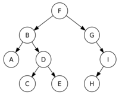

Bloque II. Tecnología básica - La web de emijrp
| Oposiciones | |
|---|---|
| Apuntes | Bloque I · Bloque II · Bloque III · Bloque IV |
El Bloque II. Tecnología básica de las Oposiciones a TAI 2017 se compone de 5 temas.
| Tabla de contenidos |
|---|
|
1. Tema 1: Informática básica 1.1 Sistemas numéricos 1.2 Arquitecturas de ordenador 1.3 Componentes internos 2. Tema 2: Periféricos 2.1 Elementos de impresión 2.2 Elementos de almacenamiento 2.3 Elementos de visualización 2.4 Elementos de digitalización 3. Tema 3: Tipos abstractos y Estructuras de datos 3.1 Estructuras de datos 3.2 Sistemas de ficheros 3.3 Algoritmos 3.4 Formatos de ficheros 3.4.1 Windows 3.4.2 Linux 3.4.3 Otras 4. Tema 4: Sistemas operativos 4.1 Android 4.2 GNU/Linux 4.3 Microsoft Windows 5. Tema 5: Bases de datos 5.1 Relacionales 5.2 Orientados a objetos 5.3 NoSQL 6. Fuentes 7. Referencias |
Tema 1: Informática básica
Informática básica. Representación y comunicación de la información: elementos constitutivos de un sistema de información. Características y funciones. Arquitectura de ordenadores. Componentes internos de los equipos microinformáticos.
Sistemas numéricos
Pregunta relacionada en convocatoria 2016
- Binario: base 2, solamente se utilizan el 0 y el 1.
- Octal: base 8, se utilizan del 0 al 7.
- Decimal: base 10, se utlizan del 0 al 9.
- Hexadecimal: base 16, se utilizan del 0 al 9 y de la A a la F.
Para convertir un número decimal a binario, se divide el número entre 2 sucesivamente. Los restos colocados a la inversa componen el número en binario.
- 8 / 2 = 4. Resto 0.
- 4 / 2 = 2. Resto 0.
- 2 / 2 = 1. Resto 0.
- 1 / 2 = 0. Resto 1.
- 8 en decimal es 1000 en binario.
Para convertir un número decimal a octal se utiliza el mismo método.
- 34 / 8 = 4. Resto 2.
- 4 / 8 = 0. Resto 4.
- 34 en decimal es 42 en octal.
Para convertir un número decimal a hexadecimal...
Para convertir un número binario a decimal...
Para convertir un número octal a decimal...
Para convertir un número hexadecimal a decimal...
Arquitecturas de ordenador
Según la estructura:
Pregunta relacionada en convocatoria 2016
- Arquitectura von Neumann: consta de una unidad central de proceso (CPU), compuesta de una Unidad Aritmético Lógica (con registros del procesador) y una unidad de control (con registros de instrucciones y contador de programa). Además de memoria para almacenar datos e instrucciones y mecanismos de entrada y salida. No pueden darse a la vez una búsqueda de instrucciones y una operación de datos ya que comparten el mismo bus. La unidad de control indica qué operación ejecutar en cada momento.
- Arquitectura Harvard: cuentan con conjunto de direcciones y buses separados para instrucciones y datos.
La arquitectura von Neumann es más sencilla que la Harvard, que es más moderna. Ambas son sistemas de programas almacenados, es decir, mantiene las instrucciones de programa y los datos en una memoria de lectura-escritura.
Según el conjunto de instrucciones:
- Arquitectura CISC: estos microprocesadores cuentan con un conjunto de instrucciones amplio capaces de realizar operaciones complejas. Los operandos de estas operaciones pueden estar en memoria o en registros internos. Es acrónimo de Complex Instruction Set Computer (Ordenador de Conjunto de Instrucciones Complejo). Son anteriores a los RISC. Ejemplos: Motorola 68000, Zilog Z80, Intel x86, AMD x86-64.
- Arquitectura RISC: microprocesadores con instrucciones de tamaño fijo. Conjunto de instrucciones reducido y que realizan operaciones simples. Solo las instrucciones de carga y almacenamiento acceden a memoria, a diferencia de CISC. Es acrónimo de Reduced Instruction Set Computer. Facilita la segmentación y el paralelismo. Ejemplos: PowerPC, DEC Alpha, MIPS, ARM, SPARC.
- Arquitectura SISC: un subtipo de RISC, orientada al procesamiento en paralelo. Utiliza la tecnología VLSI. Es acrónimo de Simple Instruction Set Computing.
Pregunta relacionada en convocatoria 2016
Según el número de núcleos:
- Un núcleo:
- Varios núcleos:
Componentes internos
Los componentes internos básicos de un ordenador son:
- Disco duro: dispositivo de almacenamiento de datos que emplea un sistema de grabación magnética. Se compone de uno o más platos que giran en un mismo eje, y sobre éstos se sitúa un cabezal para lectura-escritura que no toca la superficie. Se trata de memoria no volátil, al contrario que la memoria RAM. La interfaz puede ser IDE (ATA/PATA), SCSI o más recientemente SATA.
- Discos SSD: SSD es el acrónimo de Solid State Drive, disco de estado sólido. Son discos más rápidos que los discos mecánicos clásicos y su coste es superior.
- Memoria RAM:
- Microprocesador:
- Placa base:
- Tarjeta gráfica:
- Tarjeta de sonido:
Pregunta relacionada en convocatoria 2016
Las memorias no volátiles no necesitan energía para mantener la información almacenada. Ejemplos: CD/DVD, cintas magnéticas, disquetes, discos duros, ROM (read-only memory) y sus variantes (ROM-CMOS), NVRAM (non-volatile RAM), etc.
Las memorias volátiles pierden la información al interrumpirse la corriente eléctrica. Ejemplos: RAM (random access memory), SRAM (static RAM), DRAM (dynamic RAM), RDRAM (Rambus DRAM), SDRAM, todas las DDR. Las estáticas no requieren refresco para mantener los datos en memoria mientras que las dinámicas sí.
Tema 2: Periféricos
Periféricos: conectividad y administración. Elementos de impresión. Elementos de almacenamiento. Elementos de visualización y digitalización.
Los puertos son interfaces entre un ordenador y otros ordenadores o periféricos.
Pregunta relacionada en convocatoria 2016
Un periférico es un dispositivo que se conecta a un ordenador a través de un puerto y que realiza alguna tarea. A grandes rasgos, puede haber periféricos de entrada (teclado, ratón, micrófono, escáner, lector de huellas) y periféricos de salida (pantalla, altavoz, impresora).
Tipos de USB:
- USB 1.0: Desde 1.5 Mbit/s hasta 12 Mbit/s.
- USB 2.0: Hasta 480 Mbit/s (35 MB/s).
- USB 3.0: SuperSpeed USB (SS). Hasta 5 Gbit/s (625 MB/s), unas 10 veces más rápido que USB 2.0. El conector es de color azul.
- USB 3.1: Hasta 10 Gbit/s (1250 MB/s). Dos veces más rápido que USB 3.0.
El conector plano USB es el estándar A. El estándar B es el cuadrado. Ambos tienen 4 pines (voltaje, data-, data+ y tierra).
Otros puertos:
- eSATA: External SATA.
- Ethernet:
- Firewire: Diseñado por Apple. Desde 400 Mbit/s (50 MB/s) hasta 3200 Mbit/s (400 MB/s). El estándar es IEEE 1394.
- HDMI / DVI / VGA:
- Jack:
- SCSI: generalmente para discos duros y cintas. Acrónimo de Small Computer System Interface.
- PS/2: conector de 6 pines para teclado y ratón. Electrónicamente son similares, pero pueden no ser intercambiables por usar distintos comandos (violeta teclado, verde ratón).
- Puerto paralelo: envían varios bits de datos cada vez, por ello cuentan con varias líneas de datos. Se estandarizó como IEEE 1284 y fue el habitual para impresoras hasta que llegó el USB.
- Puerto serie: permiten transmitir un bit cada vez solamente, a diferencia del puerto paralelo.
Tipos de teclado:
- QWERTY: Es la distribución de teclado más común.
- QWERTZ / QWERTZU: Utilizado en regiones germanohablantes. Intercambia la Z e Y con los teclados QWERTY, ya que la Z es más frecuente en alemán que la Y, y la T y Z aparecen juntas en palabras alemanas.
- AZERTY: Utilizado en páises francófonos.
- HCESAR: Utilizado en Portugal durante algún tiempo. Después pasaron al QWERTY.
- Dvorak: Tiene como objetivo ser más ergonómico para reducir los errores en mecanografía.
Elementos de impresión
Las impresoras pueden ser:
Pregunta relacionada en convocatoria 2016
- De impacto: matriciales (o de agujas), de margarita, de bola, de línea. Limitadas a texto o gráficos muy básicos. Monocromáticas. Se golpea el papel y el impacto transfiere la tinta.
- Sin impacto: térmicas (agujas calientes recorren papel termosensible: cajeros), de inyección o chorro de tinta (proyección de gotas de tinta), sublimación de tinta (se usa calor para transferir la tinta), láser.
Según el método de impresión:
- Carácter a carácter: matriciales, inyección, térmicas, margarita.
- Línea a línea: cinta, cadena, tambor.
- Página a página: láser.
Las de inyección de tinta pueden ser térmicas o piezoelétricas.
Lenguajes de descripción de página:
- PostScript: creado en 1982 en Adobe Systems.
- Printer Command Language (PCL): desarrollado por Hewlett Packard en 1980 para impresoras de chorro de tinta. Actualmente hay 6 versiones, hasta PCL6.
- HPGL: para plóter. Existe una segunda versión HPGL2.
Las conexiones más frecuentes son con puerto paralelo o USB. Las impresoras en red utilizan el RJ-45.
Elementos de almacenamiento
Tipos de interfaces:
- Parallel ATA (PATA): Diseñado por Western Digital en 1986, como interfaz para conectar discos duros, llamado al principio Intergrated Drive electronics (IDE). Su extensión ATAPI permite lectoras de CD.
Pregunta relacionada en convocatoria 2016
- Serial ATA (SATA): Reemplaza a PATA. Sirve para discos duros, lectoras de CD y discos de estado sólido SSD.
- SATA 1.0: 1.5 Gbit/s (150 MB/s) SATA-150.
- SATA 2.0: 3 Gbit/s (300 MB/s) SATA-300.
- SATA 3.0: 6 Gbit/s (600 MB/s) SATA-600.
Pregunta relacionada en convocatoria 2016
Tipos de RAID:
- RAID 0: Los datos se distribuyen entre dos o más discos, sin información de paridad, redundancia o tolerancia a fallos. El fallo de uno de los discos provoca la pérdida de todos los datos. La utilidad del RAID 0 es que aumenta el rendimiento (velocidad de lectura y escritura) y puede crear un volúmen lógico mayor al combinar varios discos.
- RAID 1: Consiste en la copia exacta (mirror) de los datos en dos o más discos (normalmente dos). La velocidad de lectura puede ser mejor ya que los datos están en varios discos, pero la de escritura es igual a la de un solo disco porque se escribe todo en todos los discos.
- RAID 2: Reparte los datos a nivel de bits en vez de bloques. No tiene redundacia pero sí "paridad" con Hamming code. Se utiliza muy poco.
- RAID 3: Reparte los datos a nivel de bytes, con un disco con información de paridad. Se utiliza muy poco.
- RAID 4: Reparte los datos a nivel de bloque, con un disco dedicado a paridad. El rendimiento de lectura es alto, pero la escritura es baja al ir toda la información de paridad en el mismo disco.
- RAID 5: Datos repartidos a nivel de bloque, con paridad distribuida entre varios discos. Si falla un disco, la información puede reconstruirse con la paridad. Requiere al menos tres discos.
- RAID 6: Como el RAID 5 pero con dos bloques de paridad en distintos discos.
| Nivel | Discos (mínimo) | Eficiencia espacio | Tolerancia a fallos |
|---|---|---|---|
| RAID 0 | 2 | 1 | Ninguna |
| RAID 1 | 2 | 1/N | N-1 pueden fallar |
| RAID 2 | 3 | 1-(1/N * log2 (n-1)) | 1 |
| RAID 3 | 3 | 1-(1/N) | 1 |
| RAID 4 | 3 | 1-(1/N) | 1 |
| RAID 5 | 3 | 1-(1/N) | 1 |
| RAID 6 | 4 | 1-(2/N) | 2 |
Elementos de visualización
- Monitores LCD
- Monitores CRT
- Píxel
- Resolución de pantalla
Elementos de digitalización
Los escáneres pueden ser:
- De mano: se mueven a mano sobre el sujeto a escanear. Hay dos tipos: de documentos y 3D.
- De tambor:
- De cama plana: los más comunes.
Tema 3: Tipos abstractos y Estructuras de datos
Tipos abstractos y Estructuras de datos. Organizaciones de ficheros. Algoritmos. Formatos de información y ficheros.
Estructuras de datos
- Pila: cuenta con dos operaciones principales (push y pop). Push añade un elemento a la cima de la pila, mientras que pop elimina el elemento situado en la cima de la pila. Este orden se conoce como LIFO (Last In, First Out; Último en entrar, Primero en salir).
- Cola: en esta estructura de datos, la operación push se realiza por un extremo de la cola, y la operación pop por el extremo opuesto. Este orden se conoce como FIFO (First In, First Out; Primero en entrar, Primero en salir).
- Lista: secuencia de elementos que siguen un orden.
Pregunta relacionada en convocatoria 2016
- Árbol: estructura jerárquica y dinámica con un nodo raíz y subárboles que cuelgan de dicho nodo principal u otros inferiores. Los árboles se pueden recorrer en profundidad y en anchura (amplitud). Un árbol binario es aquel cuyos nodos pueden tener un máximo de dos hijos.
- Nodo externo: Cuando un nodo no apunta a ningún hijo.
- Nivel: Se comienza en el nivel 0 (nodo raiz).
- Altura: Número de niveles + 1. Un árbol con nivel 0, 1 y 2, tiene altura 3.
|  |
| Árbol binario. |
{kind=link}
- Recorrido en profundidad
- Recorrido en preorden: raíz, izquierda, derecha. Ejemplo: F B A D C E G I H
- Recorrido en inorden: izquierda, raíz, derecha. Ejemplo: A B C D E F G H I
- Recorrido en postorden: izquierda, derecha, raíz. Ejemplo: A C E D B H I G F
- Recorrido en anchura: se van recorriendo todos los niveles y hasta que no se han recorrido los nodos de cada nivel no se sigue bajando. Ejemplo: F B G A D I C E H
- Grafo: conjunto de nodos conectados, puede haber grafos dirigidos (vértices con orientación) y grafos no dirigidos (vértices sin orientación).
- Tablas de dispersión: relaciona unas claves con sus valores. La búsqueda es muy rápida, recuperando los valores indicando su clave. También se conocen como matriz asociativa o tabla hash.
Sistemas de ficheros
Los sistemas de ficheros controlan cómo se almacenan los datos en los distintos medios y cómo se recuperan. Normalmente los sistemas operativos cuentan con soporte para varios sistemas de ficheros.
- FAT: diseñado en 1997, existen tres variantes, FAT12, FAT16 y FAT32. Es acrónimo de File Allocation Table (Tabla de Asignación de Archivos). Se utilizó en DOS, Windows 9x, disquettes y actualmente en memorias flash (incluido pendrives).
- NTFS: diseñado en 1993 por Microsoft. Es acrónimo de New Technology File System. Se utiliza en Windows NT, XP, Vista, Windows 7-8-10.
- EXT: sistema de ficheros para el núcleo Linux. Sus variantes son EXT, EXT2, EXT3 y EXT4. A partir de EXT3 se incluye la tecnología journaling que reduce la posibilidad de corrupción de datos por apagado abrupto del sistema.
- JFS: creado en 1991 por IBM, cuenta con journaling.
- XFS: creado en 1993 por Silicon Graphics, cuenta con journaling.
- ZFS: creado en 1995 por Oracle.
- ReiserFS: creado en 1991 por Namesys. Su sucesor es Reiser4. Tiene journaling.
- HFS Plus: desarrollado por Apple.
- ISO 9660: es un sistema de archivos para medios ópticos (CD, DVD).
Pregunta relacionada en convocatoria 2016
Bit (b) < Byte (B) < Kilobyte (KB) < Megabyte (MB) < Gigabyte (GB) < Terabyte (TB) < Petabyte (PB) < Exabyte (EB) < Zettabyte (ZB) < Yottabyte (YB).
Algoritmos
Un algoritmo es un conjunto de instrucciones bien definidas, ordenadas y finitas, que permiten realizar una tarea mediante la ejecución de dichos pasos. A partir de un estado inicial y con unos datos de entrada, siguiendo las instrucciones, se llega al estado final obteniendo el resultado.
Pregunta relacionada en convocatoria 2016
La complejidad de un algoritmo determina su dificultad y la cantidad de recursos necesarios para su ejecución. La complejidad de los algoritmos se puede medir para su peor, promedio y mejor caso.
- Peor caso: los datos de inicio hacen que el algoritmo ejecute el caso más complicado.
- Caso promedio: los datos de inicio no presentan ningún caso especial, es el ejemplo medio.
- Mejor caso: los datos de inicio suponen el caso más sencillo de resolver.
Algoritmos de ordenación:
- Burbuja / Bubblesort: consiste en revisar cada elemento con el siguiente, intercambiándolos si es necesario. ¿N-1 pasadas?
- Rápido / Quicksort:
Formatos de ficheros
Windows
Extensiones más frecuentes:
- AVI
- BAT
- BIN
- BMP
- CAB
- CHM
- DAT
- DLL
- DOC
- DOCX
- EPS
- EXE
- FLV
- GIF
- GZ/GZIP
- HTM/HTML
- ISO
- JAR
- JPG/JPEG
- LNK
- LOG
- M4A
- MP3
- MPG/MPEG
- MSI
- PNG
- PPS/PPT
- PUB
- RAR
- RM
- RMVB
- RTF: Rich Text Format
- SQL
- SWF
- TGZ
- TIF:
- TORRENT
- TTF
- TXT
- VOB
- WAV
- WMA
- WMV
- XLS
- XLSX
- ZIP
Linux
Extensiones más frecuentes:
- ARJ: Compresión
- BZ2: Compresión con BZIP2
- C: Código en C
- CPP: Código en C++
- DEB: Paquetes Debian
- DIFF: Diferencia entre 2 ficheros
- ELF: Binario
- GZ: Compresión con GZIP
- H: Código en C (Headers)
- JAR: Aplicación Java
- LOG: Ficheros de registros
- O: Compilación temporal
- ODB: OpenDocument Base
- ODG: OpenDocument Dibujo Vectorial
- ODP: OpenDocument Presentaciones
- ODS: OpenDocument Calc
- ODT: OpenDocument Text
- OGG: Ogg Vorbis
- PID: Identificadores de procesos
- PL: Script en Perl
- PY: Script en Python
- RPM: Paquetes Red Hat, SUSE, Mandriva
- SH: Script de Shell
- SQL: Structured Query Language
- TAR: Archivo empaquetado
- TGZ:
Otras
- APK: Android Application Package
- Apple
Tema 4: Sistemas operativos
Sistemas operativos. Características y elementos constitutivos. Sistemas Windows. Sistemas Unix y Linux. Sistemas operativos para dispositivos móviles.
Un sistema operativo es el software principal que gestiona los recursos hardware y proporciona servicios a los demás programas.
- Núcleo monolítico: arquitectura de sistema operativo donde éste trabaja en espacio del núcleo, estando él solo en modo supervisor. Provee una interfaz de alto nivel para el hardware. Ejemplos: Unix, Linux, DOS, Windows 9x, FreeDOS.
- Micronúcleo: el software mínimo que provee de mecanismos necesarios para implementar un sistema operativo. Incluye control de memoria, hilos y comunicación entre procesos a bajo nivel.
Android
Versiones de Android:
- Apple Pie
- Banana Bread
- Cupcake
- Donut
- Eclair
- Froyo
- Gingerbread
- Honeycomb (tablets)
- Ice Cream Sandwich
- Jelly Bean
- KitKat
- Lollipop
- Marshmallow
- Nougat
- Oreo
- Android P
GNU/Linux
Pregunta relacionada en convocatoria 2016
Una distribución Linux (distro) es un conjunto de paquetes de software, el núcleo GNU/Linux y también generalmente un sistema de ventanas, proporcionando un sistema operativo completo orientado ya sea a uso doméstico, empresarial o de servidores. A continuación un listado de distros y sus variantes.
- Debian: una de las primeras distribuciones no comerciales. Mantenida por voluntarios con un gran compromiso con la filosofía del software libre.
- Knoppix: primera distribución Live CD, funcionando completamente desde medios extraíbles (CD, USB) sin necesidad de instalación en el disco duro.
- Linux Mint Debian Edition: utiliza los paquetes Debian en vez de los de Ubuntu.
- Ubuntu: mantenida por Canonical Ltd.
- Kubuntu: la versión KDE de Ubuntu.
- Linux Mint: soporta varios entornos de escritorio, como Cinnamon (fork de GNOME Shell) y MATE (fork de GNOME 2).
- Trisquel: incluye exclusivamente software libre. No incluye software o firmware propietarios.
- Elementary OS: centrada en mejorar la experiencia visual de usuario sin sacrificar rendimiento.
- Fedora: distribución de comunidad pero apoyada por la empresa Red Hat. En ella se testean las mejoras que luego se integrarán en la versión empresarial.
- Red Hat Enterprise Linux: provee de una distro testeada, segura y estable para servidores y workstations.
- CentOS:
- Oracle Linux: mantenida y apoyada por Oracle.
- Scientific Linux: mantenida por Fermilab, CERN y otros.
- Mandriva: apoyada por la empresa del mismo nombre, posteriormente al entrar en bancarrota se convirtió en OpenMandriva Lx.
- Mageia: creada en 2010.
- PCLinuxOS: distribución de escritorio mantenida por la comunidad.
- ROSA Linux: otra distro derivada de Mandriva.
- openSUSE: distribución apoyada por la empresa alemana SUSE.
- SUSE Linux Enterprise: mantenida y apoyada comercialmente por SUSE.
- Arch Linux: destinada a usuarios expertos, ofrece paquetes binarios oficiales y no oficiales aportados por usuarios.
- Manjaro Linux: mejora la usabilidad de Arch, con alguna interfaz gráfica adicional.
- Gentoo: distribución orientada a usuarios expertos a los que les gusta compilar todo.
- Chrome OS: sistema operativo comercial de Google. Ejecuta principalmente aplicaciones web a través del navegador.
- Chromium OS: versión open-source del anterior.
- Slackware: creada en 1993, es una de las distros más antiguas, con el compromiso de ser fácilmente modificable por los usuarios.
También existe un grupo de distribuciones ligeras (lightweight) cuyo objetivo es ocupar poco espacio y recursos para poder ser utilizadas en ordenadores con prestaciones reducidas:
- Damn Small Linux
- Knoppix
- Linux Lite
- LXLE
- CLinuxOS
- Puppy Linux
- Slax
- Tiny Core Linux
- Trisquel
- Xubuntu
Un sistema de ventanas proporciona la interfaz gráfica de usuario a un sistema operativo, implementando las ventanas, iconos, menúes, etc. El más común en sistemas Linux es X Window System. En Windows se llama Desktop Window Manager.
Pregunta relacionada en convocatoria 2016
Opciones de programas comunes:
- vi(m): x (borrar carácter), dd (borrar línea), w (guardar), wq (guardar y salir), q/quit (salir), q! (forzar salir sin guardar)
- emacs: C-x C-s (guardar)
- nano: ^O (guardar), ^W (buscar), ^X (salir)
Otros editores de texto son, por consola (Pico), con interfaz gráfica (gedit, Notepad++, Geany y Emacs).
Pregunta relacionada en convocatoria 2016
Uso de comandos básicos:
- chmod: cambiar permisos sobre ficheros o directorios. Lectura (r) = 4, Escritura (w) = 2, Ejecución (x) = 1, Todo = 7, Ninguno = 0. El orden es usuarios (u), grupo (g) y otros (o). chmod 777 file = chmod u+rwx,g+rwx,o+rwx file = chmod a+rwx file
- ln:
- rm: -r
Resumen de comandos y su función:
- cat: muestra contenido de fichero
- cd: cambia de directorio
- chgrp: cambia grupo de fichero o directorio
- chmod: cambia permisos de fichero o directorio
- chown: cambia propietario de fichero o directorio
- cp: copia ficheros o directorios
- cut: corta texto
- date: muestra la fecha y hora
- df: muestra espacio libre en disco
- diff: diferencia entre dos ficheros
- du: muestra espacio ocupado por el directorio indicado
- fg: trae a primer plano trabajos ocultados a segundo plano anteriormente con Ctrl+Z
- grep: ejecuta expresiones regulares sobre texto o ficheros
- head: muestra el inicio de un fichero. Opuesto a tail.
- htop: muestra procesos (más visual)
- ln: crea un enlace a un fichero
- man: muestra ayuda de comandos
- md5sum: calcula hash md5 de fichero
- mkdir: crea un directorio. Opuesto a rmdir
- mv: renombrar o mover ficheros y directorios
- pwd: muestra directorio activo
- ps: muestra procesos
- pstree: muestra árbol de procesos
- rev: invierte una cadena
- rm: borra fichero
- rmdir: borra directorio vacío. Opuesto a mkdir
- sort: ordena una lista
- shutdown: apaga el sistema
- tail: muestra el final de un fichero. Opuesto a head
- time: calcula el tiempo de ejecución de un comando
- top: muestra procesos
- touch: crea un fichero o modifica su fecha si ya existe
- uniq: elimina duplicados de una lista
- wc: cuenta caracteres y líneas de un fichero
- who: muestra quien está logueado en el sistema
Microsoft Windows
Tema 5: Bases de datos
Sistemas de gestión de bases de datos relacionales, orientados a objetos y NoSQL: características y componentes.
Un sistema gestor de base de datos (SGBD) es un conjunto de programas que permiten el almacenamiento, modificación y extracción de la información en una base de datos, además de proporcionar herramientas para añadir, borrar, modificar y analizar los datos.
Relacionales
Un sistema de gestión de bases de datos relacionales (RDBMS, Relational Database Management System) es aquel que sigue el modelo relacional. La mayoría de las bases de datos de hoy en día utilizan este modelo.
Todo los datos están representados en forma de tuplas (registros, filas) que componen tablas, agrupadas en relaciones que se explicitan por medio de claves primarias y claves foráneas.
El esquema es la definición de la estructura de la base de datos y principalmente almacena los siguientes datos:
- El nombre de cada tabla
- El nombre de cada columna
- El tipo de dato de cada columna
- La tabla a la que pertenece cada columna
Las bases de datos relacionales pasan por un proceso al que se le conoce como normalización de una base de datos, el resultado de dicho proceso es un esquema que permite que la base de datos sea usada de manera óptima.
Destacan MySQL, Oracle, Microsoft SQL Server, PostgreSQL, IBM DB2, Microsoft Acess, SQLite.
Orientados a objetos
En los Sistemas Gestores de Bases de Datos Orientadas a Objetos (ODBMS, Object Database Management System) la información se representa mediante objetos en vez de como campos individuales.
Un ODBMS extiende los lenguajes con datos persistentes de forma transparente, control de concurrencia, recuperación de datos, consultas asociativas y otras capacidades.
Las bases de datos orientadas a objetos se diseñan para trabajar bien en conjunción con lenguajes de programación orientados a objetos como Java, C#, Visual Basic.NET y C++. Los ODBMS usan exactamente el mismo modelo que estos lenguajes de programación.
NoSQL
Los sistemas NoSQL no emplean el lenguaje SQL como lenguaje principal de consultas.
Entre las aplicaciones más populares encontramos MongoDB, MemcacheDB, Redis, CouchDB, Hazelcast, Apache Cassandra y HBase, todas ellas de código abierto.
Las Bases de Datos XML forman un subconjunto de las Bases de Datos NoSQL. Todas ellas usan el formato de almacenamiento XML, que está abierto, legible por humanos y máquinas y ampliamente usado para interoperabilidad.
En esta categoría encontramos: BaseX, eXist, MarkLogic Server, MonetDB/XQuery, Sedna.
Fuentes
- Para confeccionar estos apuntes se han utilizado en ocasiones artículos de Wikipedia.
Referencias
| Oposiciones | |
|---|---|
| Apuntes | Bloque I · Bloque II · Bloque III · Bloque IV |
 |
Esta página fue modificada por última vez el 2018-04-21 17:47:02 (UTC) | GitHub pages |